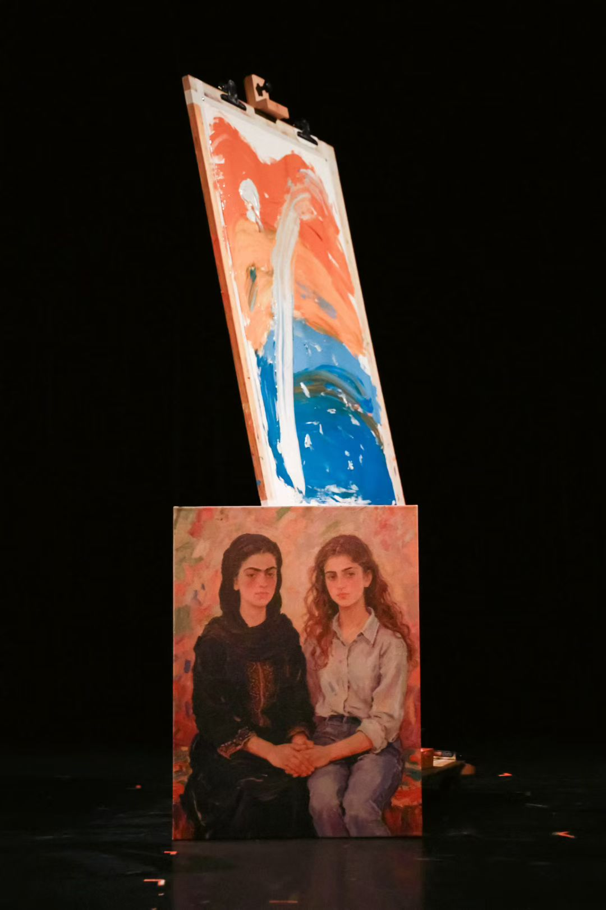
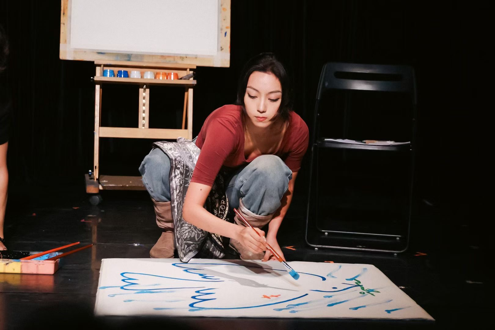

《先生，黑色不是阳光明媚》
A devised work written and performed by Xiwei Ma, in which a facilitator and her client rehearse an unsuccessful therapy. Presented at the 2025 Wuzhen Theatre Festival.
Best Individual Performance Award — Wuzhen Theatre Festival


